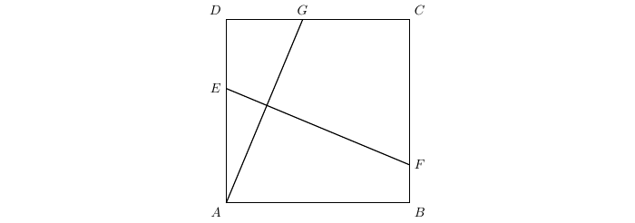
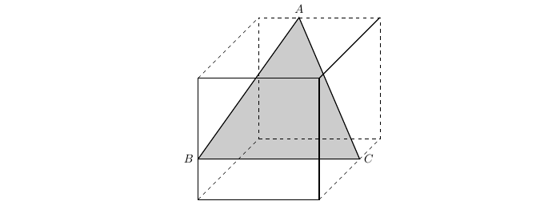
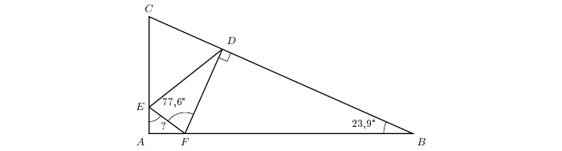
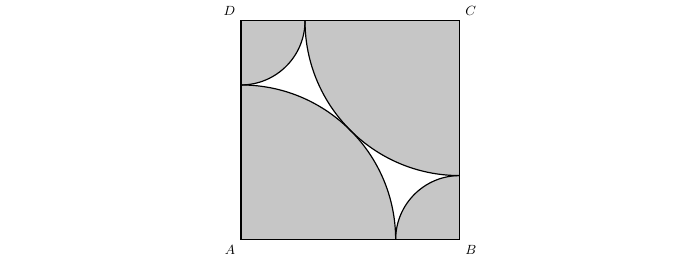
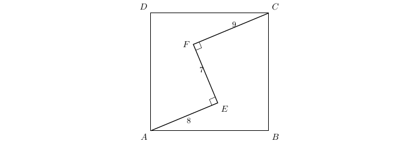
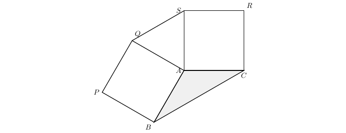

AP Concours · chapitre 2-n2 · 20 questions tirées au hasard parmi 48
Score : 0 / 20
1Gaspard le cafard se déplace uniquement sur les lignes d'un quadrillage dont les carrés ont un côté de longueur $1$. S'il se trouve sur un croisement du quadrillage, combien de croisements sont pour lui à distance $3$ (le long des lignes) ?
Réponse : Depuis un croisement, les croisements situés à exactement $3$ unités le long des lignes sont $(\pm3\,;0)$ et $(0\,;\pm3)$ (quatre points), puis $(\pm2\,;\pm1)$ et $(\pm1\,;\pm2)$ (huit points), soit $4+8=12$ croisements.
2Un quart de cercle de rayon $4$ et de centre $B$ et un quart de cercle de rayon $3$ et de centre $D$ sont construits à l'intérieur du rectangle $ABCD$ ; le sommet $C$ appartient au grand quart de cercle. Si les deux cercles sont tangents, que vaut $\lvert AB\rvert$ ?
Réponse :$\sqrt{33}$. $BC=4$ (rayon du grand quart de cercle) et les deux cercles sont tangents donc $BD=4+3=7$ ; dans le triangle rectangle en $C$, $AB^{2}=BD^{2}-BC^{2}=49-16=33$.
3Les angles consécutifs d'un quadrilatère (non croisé) ont comme amplitudes, en degrés, $x$, $2x$, $3x$ et $4x$, dans cet ordre.
Réponse :un trapèze. $x+2x+3x+4x=360$ donne $x=36$°, donc les angles sont $36$, $72$, $108$, $144$ : deux angles consécutifs supplémentaires, ce qui caractérise un trapèze.
4Le côté du carré $ABCD$ est $24$. Le point $E$ est situé sur le côté $AD$, le point $F$ sur le côté $BC$ et le point $G$ sur le côté $CD$. Si $\lvert DG\rvert=10$ et si $EF$ est perpendiculaire à $AG$, quelle est la longueur de $EF$ ?

Réponse :$26$. En posant $E(0 ;e)$ et $F(24 ;f)$, la perpendicularité $EF\perp AG$ donne $24\times10+24(f-e)=0$, donc $f-e=-10$ et $EF=\sqrt{24^{2}+10^{2}}=26$.
5Les points $A$, $B$ et $C$ sont chacun au tiers d'une arête du cube représenté ci-contre. Si l'arête du cube vaut $12$, quelle est l'aire du triangle $ABC$ ?

Réponse :$56\sqrt3$. Avec $A(4 ;12 ;12)$, $B(0 ;4 ;0)$, $C(12 ;0 ;8)$, le triangle est équilatéral de côté $\sqrt{224}$ et son aire vaut $\frac{\sqrt3}{4}\times224=56\sqrt3$.
6Des carrés noir et gris sont positionnés à l'intérieur d'un grand carré comme indiqué sur la figure ci-contre. Quel est le rapport de l'aire du carré noir à celle du carré gris ?
Réponse :$\frac98$. Le carré noir occupe le quart du grand carré et le losange gris les $\frac{2}{9}$ : le rapport vaut $\frac{1/4}{2/9}=\frac98$.
7Les segments $[OA]$ et $[OB]$ sont perpendiculaires et de même longueur. Ces deux segments sont les diamètres de deux demi-cercles qui se recoupent en $C$. Le quart de cercle $AB$ est centré en $O$. L'aire de la région colorée en gris clair est $S_1$ et celle de la région colorée en gris foncé est $S_2$. Laquelle des affirmations suivantes est correcte ?
Réponse :$S_1=S_2$. Chaque triangle $OAC$ et $OBC$ a pour aire $\frac12R^{2}\sin\alpha$ ; les deux demi-disques se partagent donc le quart de disque de façon que $S_1=S_2=\frac{R^{2}}{2}\left(\frac{\pi}{2}-1\right)$.
8Sur la figure ci-contre, quatre petits cercles de même rayon, tangents l'un à l'autre, sont disposés le long d'un diamètre du grand cercle. Le cercle grisé est tangent extérieurement à deux de ces petits cercles et intérieurement au grand cercle. Quel est le rapport du rayon du cercle grisé à celui des petits cercles ?
Réponse :$\frac85$. En notant $\rho$ le rayon du cercle grisé, la tangence donne $\frac{R^{2}}{16}+(R-\rho)^{2}=(\rho+\frac R4)^{2}$, d'où $\rho=\frac{2R}{5}$ et $\frac{\rho}{R/4}=\frac85$.
9Deux carrés sont l'un circonscrit et l'autre inscrit à un cercle. Que vaut le rapport de l'aire du grand carré à celle du petit ?
Réponse :$2$. Grand carré : côté $2r$, aire $4r^{2}$ ; petit carré : côté $r\sqrt2$, aire $2r^{2}$ ; le rapport vaut $2$.
10Dans un demi-cercle de centre $O$ et de diamètre $[AB]$ est inscrit un triangle $ABC$ où le point $C$ est mobile. Le rayon $[OC]$ détermine deux triangles $OAC$ et $OBC$. Si $\alpha$ désigne l'angle au centre $\widehat{AOC}$, quelle est l'affirmation vraie ?
Réponse :les deux triangles ont toujours la même aire. $\mathcal{A}(OAC)=\frac12R^{2}\sin\alpha$ et $\mathcal{A}(OBC)=\frac12R^{2}\sin(180°-\alpha)$, quantités égales.
11Dans la figure ci-dessous, si $RPCQ$ est un parallélogramme, quelle est la longueur $\lvert AQ\rvert$ ?
Réponse :$8{,}4$. $RPCQ$ parallélogramme donne $RQ=PC=7$ et $RQ\parallel BC$, donc $\frac{AQ}{AC}=\frac{7}{12}$ ; avec $RP=QC=6$ on obtient $AC=14{,}4$ puis $AQ=8{,}4$.
12Le triangle $ABC$ est isocèle de base $[AC]$. Les points $P$ et $Q$ sur $[BC]$ et $[BA]$ respectivement sont tels que $\lvert AC\rvert=\lvert AP\rvert=\lvert PQ\rvert=\lvert QB\rvert$. Que mesure, en degrés, l'angle $\widehat B$ ?
Réponse :$\frac{180}{7}$. En notant $\beta$ l'angle $\widehat B$ et en utilisant les trois triangles isocèles successifs, on obtient $7\beta=180$, donc $\beta=\frac{180}{7}\approx25{,}7$°.
13Quel est le rayon du cercle tangent extérieurement à quatre cercles de même rayon $r$ tangents l'un à l'autre comme sur la figure ci-contre ?
Réponse :$(\sqrt2+1)r$. Les centres des quatre cercles forment un carré de côté $2r$ ; la distance d'un centre au centre de la figure vaut $r\sqrt2$, donc le grand cercle a pour rayon $r\sqrt2+r$.
14Un cube dont les arêtes mesurent $8$ cm a été coupé par un plan. La section est un hexagone régulier. L'une des parties est le polyèdre ci-contre. Quelle est, en centimètres, la longueur totale des arêtes de ce polyèdre ?
Réponse :$24(2+\sqrt2)$. La pièce a $3$ arêtes de $8$, $6$ demi-arêtes de $4$ et $6$ côtés d'hexagone de $4\sqrt2$ : $24+24+24\sqrt2=24(2+\sqrt2)$.
15Les demi-cercles de centres $B$ et $D$ et de rayon $3$ sont tangents en $C$. La tangente au demi-cercle de diamètre $[AC]$ issue de $D$ coupe en $P$ la tangente au demi-cercle de diamètre $[CE]$ issue de $B$. Que vaut l'aire du triangle $BDP$ ?
Réponse : Les demi-cercles ont pour rayon $3$ et sont tangents en $C$, donc $BC=CD=3$ et $BD=6$. En prenant $B(0\,;0)$, $C(3\,;0)$ et $D(6\,;0)$, la tangente issue de $D$ au cercle de centre $B$ a pour équation $y=\frac{6-x}{\sqrt3}$ (sa distance à $B$ vaut $3$) et la tangente issue de $B$ au cercle de centre $D$ a pour équation $y=\frac{x}{\sqrt3}$ (sa distance à $D$ vaut $3$). Elles se coupent en $P\left(3\,;\sqrt3\right)$, à la verticale de $C$. Le triangle $BDP$ a donc pour base $BD=6$ et pour hauteur $CP=\sqrt3$, d'où une aire de $\frac12\times6\times\sqrt3=3\sqrt3$.
16Un « hand spinner » (le trait gras sur la figure) est formé de $6$ cercles de même rayon $r$ tangents entre eux, et tangents à un $7$<sup>e</sup> cercle central de même rayon. Quel est le périmètre de ce « hand spinner » ?
Réponse : Chaque cercle extérieur est tangent à ses deux voisins : les deux points de contact délimitent, du côté extérieur, un arc de $240$° que ne recouvre aucun autre cercle (l'arc intérieur de $120$°, lui, est en partie masqué par le cercle central). Le périmètre du hand spinner vaut donc $6\times\frac{240}{360}\times2\pi r=8\pi r$.
17Le triangle $ABC$ est rectangle en $A$ avec $\lvert AB\rvert=12$ et $\lvert AC\rvert=5$. La droite $d$ est la bissectrice de l'angle $\widehat A$. Le triangle $ADE$ est l'image de $ABC$ par la symétrie orthogonale d'axe $d$. Les côtés $BC$ et $DE$ se coupent en $F$. Que vaut l'aire du quadrilatère non convexe $ABFD$ ?
Réponse :$\dfrac{720}{17}$. La symétrie d'axe $d$ échange les droites $AB$ et $AC$, donc $AE=AC=5$ et $AD=AB=12$. En posant $A(0 ;0)$, $B(12 ;0)$, $C(0 ;5)$, $E(5 ;0)$, $D(0 ;12)$, les droites $(ED)$ et $(CB)$ se coupent en $F\left(\frac{420}{119} ;\frac{420}{119}\right)$, qui est bien sur la bissectrice. L'aire du quadrilatère non convexe $ABFD$ vaut alors $12x_F=\frac{5 040}{119}=\frac{720}{17}$.
18Dans un triangle $ABC$, la médiane issue de $A$ est perpendiculaire à la médiane issue de $B$. Si $\lvert BC\rvert=8$ et $\lvert AC\rvert=6$, que vaut $\lvert AB\rvert$ ?
Réponse : En notant $a=BC=8$, $b=CA=6$ et $c=AB$, la perpendicularité des médianes issues de $A$ et de $B$ équivaut à $a^{2}+b^{2}=5c^{2}$. On en déduit $5c^{2}=8^{2}+6^{2}=100$, donc $c^{2}=20$ et $c=2\sqrt5$.
19Le côté du petit carré vaut le tiers du côté du carré moyen ; le côté du carré moyen vaut la moitié du côté du grand carré. Si l'aire du petit carré est $11$ cm$^{2}$, quelle est l'aire du grand carré, en cm$^{2}$ ?
Réponse :$396$. Le grand côté vaut $6$ fois le petit, donc l'aire du grand carré est $36$ fois celle du petit : $36\times11=396$.
20Dans le triangle $ABC$, l'angle $\widehat{CAB}$ est droit. D'après la figure ci-dessous, que vaut l'amplitude de l'angle $\widehat{AEF}$ ?

Réponse :$53{,}6$°. Dans le triangle $ABC$, $\widehat B=23{,}9$° et $\widehat C=66{,}1$°. Le triangle $DFB$ est rectangle en $D$ donc $(DF)\perp(BC)$. Les angles $\widehat{DFE}=77{,}6$° et $\widehat{FDE}=27{,}6$° donnent $\widehat{DEF}=74{,}8$° ; comme $A$, $E$, $C$ sont alignés et que $\widehat{DEC}=51{,}6$°, il reste $\widehat{AEF}=180-74{,}8-51{,}6=53{,}6$°.
21Un rectangle de $10$ sur $12$ est inscrit à un demi-cercle ; le côté mesurant $12$ est placé sur le diamètre. Quelle est l'aire du demi-disque ? (La figure n'est pas à l'échelle.)
Réponse :$68\pi$. Le rectangle occupe la moitié supérieure : ses coins hauts sont à $6$ du milieu et à $10$ du diamètre, donc $R^{2}=36+100=136$ et l'aire du demi-disque vaut $\frac{136\pi}{2}=68\pi$.
22À l'intérieur du carré $ABCD$ de côté $1$, il y a quatre quarts de disque, deux grands et deux petits. Chaque petit quart de disque est tangent aux deux grands et les deux grands quarts de disque sont tangents entre eux. Que vaut l'aire de la surface ombrée ?

Réponse :$\dfrac{(2-\sqrt2)\pi}{2}$. Les deux grands quarts de disque sont tangents entre eux, donc leur rayon vaut la moitié de la diagonale : $R=\frac{\sqrt2}{2}$. Un petit quart de disque est tangent aux deux grands, donc son rayon vaut $r=1-\frac{\sqrt2}{2}$. L'aire ombrée est la somme des quatre quarts de disque : \[ \frac{\pi}{4}\left(2R^{2}+2r^{2}\right)=\frac{\pi}{2}\left(\frac12+\left(1-\frac{\sqrt2}{2}\right)^{2}\right)=\frac{(2-\sqrt2)\pi}{2}.\]
23Dans la figure, le cercle de centre $C$ et de rayon $1$ est tangent à la droite $AB$ et coupe le segment $[AC]$ en $D$. De plus, $\lvert AB\rvert=2\lvert BC\rvert$. Alors $\lvert AD\rvert=$
Réponse :$\sqrt5-1$. $BC=1$ et $AB=2$ : le triangle est rectangle en $B$, donc $AC=\sqrt5$ et $AD=AC-CD=\sqrt5-1$.
24Quelle est la longueur du côté du carré $ABCD$ ?

Réponse :$13$. Les segments $[AE]$ et $[FC]$ sont parallèles et $[EF]$ leur est perpendiculaire : le déplacement total de $A$ vers $C$ se décompose donc en $8+9=17$ dans une direction et $7$ dans la direction perpendiculaire. Ainsi $AC^{2}=17^{2}+7^{2}=338$, et comme $AC$ est la diagonale du carré, le côté vaut $\frac{\sqrt{338}}{\sqrt2}=\sqrt{169}=13$.
25Le segment $[AB]$ est tangent en son milieu $M$ à un cercle. Les perpendiculaires à $AB$ en $A$ et $B$ coupent le cercle en $D$ et $C$, comme sur la figure. Quel doit être le rapport de la longueur du segment $[AB]$ au rayon du cercle pour que $ABCD$ soit un carré ?
Réponse : Posons $t=\frac{AB}{R}$ et $AB=2a$, donc $a=\frac{tR}{2}$. Le point $D$ est sur la perpendiculaire en $A$ à $[AB]$, à la distance $AD=R+\sqrt{R^{2}-a^{2}}$ de $A$. La condition $AD=AB$ s'écrit $R+\sqrt{R^{2}-a^{2}}=2a$, soit $\sqrt{1-\frac{t^{2}}{4}}=t-1$. En élevant au carré : $1-\frac{t^{2}}{4}=t^{2}-2t+1$, d'où $\frac{5t^{2}}{4}=2t$ et $t=\frac85$.
27Deux des côtés d'un triangle mesurent $10$ cm et $22$ cm ; ils forment un angle aigu. L'aire du triangle est $88$ cm$^{2}$. Quelle est la longueur du troisième côté, en centimètres ?
Réponse :$8\sqrt5$. $\frac12\times10\times22\times\sin\theta=88$ donne $\sin\theta=0{,}8$ et $\cos\theta=0{,}6$ ; alors $c^{2}=100+484-2\times10\times22\times0{,}6=320$.
28Deux carrés de côté $2$ ont même centre et tout côté de l'un forme un angle de $45$° avec les côtés de l'autre. Quelle est l'aire de leur partie commune octogonale ?
Réponse :$8(\sqrt2-1)$. L'intersection est un octogone régulier dont l'aire vaut $8(\sqrt2-1)$ pour un carré de côté $2$.
29Pauline a dessiné la grille rectangulaire ci-contre, qui est divisée en $15$ cases de même grandeur. Combien de carrés de $4$ cases contiennent une case noire ?
Réponse :$7$. La grille $5\times3$ contient $8$ carrés de $4$ cases ; un seul (celui des colonnes $4$-$5$, lignes $1$-$2$) ne contient aucune case noire.
30Dans la figure, le côté de chacun des petits carrés vaut $1$ et les arcs de cercles sont des demi-cercles. Que vaut l'aire de la surface ombrée ?
Réponse :$\pi$. Les demi-cercles se compensent : l'aire ombrée est celle d'un demi-disque de rayon $1$, soit $\frac{\pi}{2}$ comptée deux fois, donc $\pi$.
31Ce grand cube était formé de $64$ petits cubes identiques. Trois tunnels rectilignes ont été creusés, qui le traversent de part en part. Les zones ombrées représentent leurs extrémités. Combien reste-t-il de petits cubes ?
Réponse :$54$. $64-10=54$ : les trois tunnels retirent $3\times4=12$ cubes, dont $3$ paires comptées deux fois, soit $12-3+1=10$ cubes distincts.
32Considérons les points de coordonnées $A=(0 ;1)$, $B=(2 ;3)$ et $C=(1 ;1)$ dans un repère orthonormé d'origine $O$.
Réponse :parallèles distinctes. $AB$ a pour coefficient directeur $\frac{3-1}{2-0}=1$ et $OC$ aussi, mais $AB$ passe par $(0 ;1)$ et non par $O$.
33Dans cette figure (imprécise), $\lvert AD\rvert=\lvert BC\rvert$. Quelle est l'amplitude de l'angle $\widehat{DAC}$ ?
Réponse :$100$°. Dans le triangle $ABC$, $\widehat{ABC}=55$° et $\widehat{BCA}=70$° donnent $\widehat{BAC}=55$° : on a donc $\lvert AC\rvert=\lvert BC\rvert$. Comme l'énoncé donne $\lvert AD\rvert=\lvert BC\rvert$, le triangle $ACD$ est isocèle en $A$ : ses angles à la base valent $\widehat{ACD}=\widehat{CDA}=40$°, d'où \[ \widehat{DAC}=180-40-40=100°.\]
34Soit $R$ le rayon du grand cercle et $r$ celui du petit cercle dans la figure ci-contre. Sachant que $R-r=5$ et $R+r=10$, que vaut l'aire de la partie ombrée ?
Réponse :$50\pi$. $R=7{,}5$ et $r=2{,}5$ ; l'aire de la couronne vaut $\pi(R^{2}-r^{2})=\pi(56{,}25-6{,}25)=50\pi$.
35Laquelle des affirmations suivantes à propos d'un triangle quelconque est fausse ?
Réponse : Dans un triangle rectangle, l'orthocentre est le sommet de l'angle droit : il appartient donc à deux côtés, ce qui rend vraie l'affirmation sur l'orthocentre. Les affirmations sur l'orthocentre extérieur, sur le centre du cercle circonscrit situé sur un côté et sur le centre de gravité sont elles aussi exactes. En revanche, si une hauteur, une médiatrice et une médiane sont confondues, le triangle est seulement isocèle : dans un triangle isocèle en $A$, la hauteur et la médiane issues de $A$ ainsi que la médiatrice de $[BC]$ sont la même droite sans que le triangle soit équilatéral. C'est donc la dernière affirmation qui est fausse.
36Ce drapeau est un rectangle de longueur $1{,}6$ m et de largeur $1$ m composé d'une croix blanche sur fond noir. L'aire de la croix blanche est égale aux $\frac{3}{10}$ de l'aire totale du drapeau. Les deux bandes blanches qui se croisent ont la même largeur. Quelle est, en millimètres, la largeur de chacune de ces bandes blanches ?
Réponse :$200$ mm. L'aire totale vaut $16 000$ cm$^{2}$ et la croix $4 800$ cm$^{2}$ : $160x+100x-x^{2}=4 800$ donne $x=20$ cm.
37Les arêtes d'un grand cube mesurent $a$ cm, avec $a$ entier et $a>2$. Toutes les faces de ce cube sont entièrement peintes puis ce cube est soigneusement découpé en $a^{3}$ petits cubes dont les arêtes mesurent $1$ cm. Il y a $6$ fois plus de petits cubes peints sur une face que de petits cubes peints sur deux faces. Que vaut $a$ ?
Réponse :$14$. Les cubes peints sur une face sont $6(a-2)^{2}$ et ceux peints sur deux faces $12(a-2)$ ; l'égalité donne $a-2=12$, donc $a=14$.
38Dans cette figure, $AQPB$ et $ASRC$ sont des carrés et $AQS$ est un triangle équilatéral. Si $\lvert QS\rvert=4$, que vaut $\lvert BC\rvert$ ?

Réponse :$4\sqrt3$. Les carrés sont construits sur les côtés : $AQ=AB$ et $AS=AC$. Comme $AQS$ est équilatéral, $AQ=AS=QS=4$, donc $AB=AC=4$ et $\widehat{QAS}=60$°. Les carrés étant extérieurs au triangle, l'angle au sommet vaut $\widehat{BAC}=180-60=120$°, d'où \[ BC=2\times4\times\sin60=4\sqrt3.\]
39Sur le cercle circonscrit à un triangle équilatéral $ABC$, le point $D$ est diamétralement opposé au point $B$. Quelle est, en degrés, l'amplitude de l'angle $\widehat{ADB}$ ?
Réponse :$60$°. $[BD]$ est un diamètre donc $\widehat{BAD}=90$° ; les angles $\widehat{ADB}$ et $\widehat{ACB}$ interceptent le même arc $AB$, d'où $60$°.
40Parmi les quatre dessins suivants, combien peuvent être tracés sans lever le crayon et sans repasser par un même trait ?
Réponse : Un dessin se trace d'un seul trait si et seulement s'il possède $0$ ou $2$ sommets de degré impair. La maison simple (carré surmonté d'un toit) n'a que les deux extrémités de la base du toit de degré impair : elle se trace. La maison avec porte ajoute deux sommets impairs au bas de la porte (quatre au total), celle dont le toit est coupé par une horizontale ajoute deux sommets impairs, et celle à toit trapézoïdal également : ces trois dessins ne se tracent pas. Un seul dessin convient.
41Dans le rectangle $ABCD$, $\lvert AB\rvert=60$. Le point $M$ est milieu de $[AB]$, le point $N$ est sur $[AD]$ avec $\lvert AN\rvert=20$. Quelle est la longueur de $[AD]$ si le triangle $MNC$ est rectangle en $N$ ?
Réponse :$110$. $M(30 ;0)$, $N(0 ;20)$, $C(60 ;h)$ ; la perpendicularité en $N$ donne $1 800-20h+400=0$, donc $h=110$.
42Un grand carré a été partagé en six petits carrés et un rectangle d'aire $168$ cm$^{2}$. Quelle est, en centimètres carrés, l'aire du grand carré ?
Réponse :$324$. Les trois carrés du bord droit ont pour côté $a/3$ et les trois carrés du bas pour côté $2a/9$ (leur somme vaut bien $3\times\frac{2a}{9}=\frac{2a}{3}$, la largeur disponible). Le rectangle restant a donc pour dimensions $\frac{2a}{3}$ et $a-\frac{2a}{9}=\frac{7a}{9}$, d'où \[ \frac{2a}{3}\times\frac{7a}{9}=\frac{14a^{2}}{27}=168 \quad\Longrightarrow\quad a^{2}=\frac{168\times27}{14}=324.\] L'aire du grand carré est donc $a^{2}=324$ cm$^{2}$.
43Quel est le rapport de l'aire du quart de disque à celle du demi-disque sur la figure ci-dessous ?
Réponse :$2$. Le demi-disque est inscrit dans le quart de disque : son diamètre est le rayon du quart de disque, donc si le quart de disque a pour rayon $R$, le demi-disque a pour rayon $r=\frac{R}{2}$. Le rapport des aires vaut alors \[ \frac{\frac{\pi R^{2}}{4}}{\frac{\pi r^{2}}{2}} =\frac{R^{2}}{4}\times\frac{2}{r^{2}} =\frac{R^{2}}{2\left(\frac{R}{2}\right)^{2}} =2.\]
44Le sol d'une cave, représenté ci-contre, est pavé de carreaux de forme carrée, excepté aux trois endroits indiqués en noir, où une colonne carrée s'élève jusqu'au plafond. Le cercle indique la position d'une lampe. Quelle est l'aire de la surface au sol qui est éclairée par cette lampe (aire mesurée en nombre de carreaux) ?
Réponse : La lampe est placée à un nœud du quadrillage. Chaque colonne (un carreau) projette depuis la lampe une ombre de $3{,}5$ carreaux en tout : le carreau de la colonne et $2{,}5$ carreaux d'ombre portée au-delà. Les trois ombres sont disjointes et couvrent $3\times3{,}5=10{,}5$ carreaux ; comme le sol compte $5\times5=25$ carreaux, la surface éclairée vaut $25-10{,}5=14{,}5$ carreaux.
45Dans le demi-cercle de diamètre $[AB]$ est inscrit un carré $IJKL$, avec les sommets $I$ et $J$ sur le segment $[AB]$. Que vaut le rapport de l'aire du carré à l'aire du demi-disque ?
Réponse :$\frac{8}{5\pi}$. Le carré de côté $s$ inscrit dans le demi-cercle de rayon $R$ vérifie $s^{2}=4R^{2}/5$ ; le rapport vaut $\frac{4R^{2}/5}{\pi R^{2}/2}=\frac{8}{5\pi}$.
46Les segments $[CE]$, $[CF]$, $[CG]$ et $[CH]$ partagent le carré $ABCD$ en cinq parties de même aire, comme sur la figure. Que vaut le rapport $\dfrac{\lvert EG\rvert}{\lvert CF\rvert}$ ?
Réponse :$\sqrt{\dfrac{10}{41}}$. Les cinq aires valant $\frac{1}{5}$ de celle du carré (côté $1$), les triangles successifs donnent $E(0 ;0{,}6)$, $F(0 ;0{,}2)$, $G(0{,}2 ;0)$ et $H(0{,}6 ;0)$. Alors \[ EG^{2}=0{,}2^{2}+0{,}6^{2}=\frac{2}{5}, \qquad CF^{2}=1^{2}+0{,}8^{2}=\frac{41}{25}, \] d'où \[ \frac{EG}{CF}=\sqrt{\frac{2/5}{41/25}}=\sqrt{\frac{10}{41}}.\]
47Sur la figure ci-dessous, $ABCD$ est un rectangle tel que $\lvert AB\rvert=3$ et $\lvert BC\rvert=2$. Le demi-cercle de diamètre $[AB]$ est tangent aux quarts de cercles de centres $C$ et $D$ en $Q$ et $P$ respectivement. Que vaut l'aire de la surface ombrée ?
Réponse :$\dfrac{13\pi}{8}$. Le demi-cercle a pour rayon $\frac{AB}{2}=\frac32$. Le quart de cercle de centre $C$ est tangent au demi-cercle, donc \[ r_{C}=\sqrt{1{,}5^{2}+2^{2}}-1{,}5=2{,}5-1{,}5=1, \] et de même $r_{D}=1$. L'aire ombrée est la somme des trois secteurs : \[ \frac{\pi\left(\frac32\right)^{2}}{2}+2\times\frac{\pi\times1^{2}}{4} =\frac{9\pi}{8}+\frac{2\pi}{4} =\frac{9\pi}{8}+\frac{4\pi}{8} =\frac{13\pi}{8}.\]
48Deux demi-droites de même origine font un angle de $60$°. Elles sont tangentes à un cercle de rayon $1$ en $T$ et $T'$. Quelle est l'aire de la surface délimitée par ces deux demi-droites et le petit arc $TT'$ ?
Réponse : Le sommet $V$ des deux demi-droites est à distance $2$ du centre $O$ du cercle (rayon $1$ et demi-angle $30$°, donc $OV=\frac{1}{\sin30°}=2$) ; les points de contact sont à distance $\sqrt3$ de $V$ et l'arc $TT'$ a pour angle au centre $120$°. L'aire cherchée est celle du triangle $VTT'$ diminuée du segment circulaire : $\frac12\times\sqrt3\times\sqrt3\times\sin60°-\left(\frac{\pi}{3}-\frac12\sin120°\right)=\frac{3\sqrt3}{4}-\frac{\pi}{3}+\frac{\sqrt3}{4}=\sqrt3-\frac{\pi}{3}$.